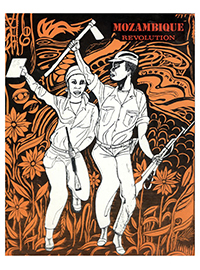
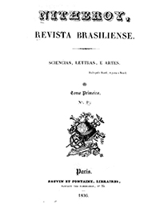
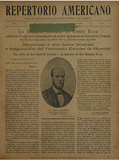

Sismographie des luttes
Vers une histoire globale des revues critiques et culturelles
Retrouvez ici les numérisations de 170 des revues présentées dans l'exposition.
Afriques
Afrique du Nord
Le libertaire
Ad-Diya
Nouvelle revue d'Égypte
L'Égyptienne
Un Effort
Al-Risalah
Al-Katib al-Masri
La Femme nouvelle
Simoun
Confluent
Kandahar
Afâq
Aqlâm
Souffles
Lamalif
Qisas
Alif
Pro-C
Afrique subsaharienne
The Black Sash
Liberation

Mozambican Revolution
Mayibuye
Sechaba
Zimbabwe Review
Tempo
Dawn
Staffrider
Izwi lase township
Speak
Inhlabamkhosi
Isizwe The Nation
Arise! Vukani
Phambili
Océan indien
Keepsake Mauricien
L'Essor
Latitude sud 18°
Capricorne
L'Aurore Malgache
La Patrie malgache
Revue des Jeunes de Madagascar
Ny Rariny - La Justice
Cahiers mauriciens
Diaspora africaine en Europe
Asies
Asie de l'Ouest
al-Muktataf
al-Mashriq
Lughat al-‘Arab
Mehyan
Ayandeh
Hawar
Khorous-e Jangi
Shi’r
al-Marifah
al-Aqlâm
al-Bayan
Al-Mawrid
Ketab-e Jom’e
Diasporas arabes et perses
Asie du Sud
Bangadarshan
Aryadarshan
Bharati / Bharati o Balak
Prabasi
Modern Review
Sabuj Patra
Manasi o Marmabani
The Visva-Bharati Quarterly
Bicitra
Journal of the Indian Society of Oriental Art
Nuqoosh
Kavilok
Contra’66
Vrischik
Diaspora d'Asie du Sud en Amérique
Asie du Sud-Est
Diaspora du Sud-Est asiatique en Amérique du Nord
Asie de l'Est
Amériques
Amérindiens et Inuit
Cherokee Phoenix
The Indian Journal
Talks and Thoughts of the Hampton Indian Students
The Quaterly journal of the Society of American Indians
The American Indian Magazine
Wassaja. Freedom's Signal for the Indian
Indian Truth
Inuktitut
Aq-ua-chamine / Menominee Talking
Taqralik
Atuaqnik
Africains-Américains
Amérique centrale et du Sud

Revista Nitheroy
Minerva Brasiliense
La Bandera Radical
Revista Gris
El Cojo Ilustrado
La Lira Chilena
Nosotros
Bohemia
Revista Americana
Musa Joven
Bucaros

El Repertorio Americano
Guarania
Klaxon
Martin Fierro
Amauta
Claridad
Revista de Antropofagia
Contemporáneos
O Homem Do Povo
Sur
Caminos
Circulo y cuadrado
Leit Motiv
Letras de Ecuador
Kyk-Over-Al
Clima
A Partir de Cero
Mito
En Haa
Cero
Maldoror
Árbol de Letras
Hexágono '71
Crisis
El Ornitorinco
Araucaria de Chile
Mer des Caraïbes
L'Abeille haytienne
Revue des colonies
Revista de Cuba
La Ronde
Cuba contemporanea
La Nouvelle ronde
Revista de Avance
La revue indigène
Conjonction
Abeng
Savacou
Diaspora de la Mer des Caraïbes en Europe
Pacifique